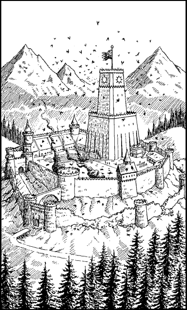

250
You crest the ridge and your spirits soar when you see the Kai Monastery two miles distant. The chequered battle-banner of the Kai flutters atop the Tower of the Sun, proudly defiant in the face of the hordes of winged Lavas circling overhead. The monastery is largely intact, though much of its surrounding wall has been damaged and plumes of smoke rise from the inner keep and training park. Yet, even at this distance, you sense that it is still being held secure from Naar’s loathsome minions.

The New Order have indeed proved themselves worthy in your absence. However, the pride you feel for your young acolytes is tempered by the price that has been paid. At the base of the Tower of the Sun you can see the blackened wreckage of the Skyrider, Banedon’s skyship, twisted and gutted where it fell to earth. There are bodies strewn about it, but at this distance, even with your magnified vision, you cannot tell if they are friend or foe.
Dusk is already upon the land and darkness will be total within the hour. Mindful of the circling Lavas who command the skies, you decide to abandon your horse and continue from here on foot. It will be harder for the enemy to spot you moving through the forest on foot than if you were to continue on horseback.
If you possess Kai-screen and have reached the rank of Kai Grand Guardian or higher, turn to 96.
If you do not possess this skill, or if you have yet to attain this level of Kai Mastery, turn to 328.